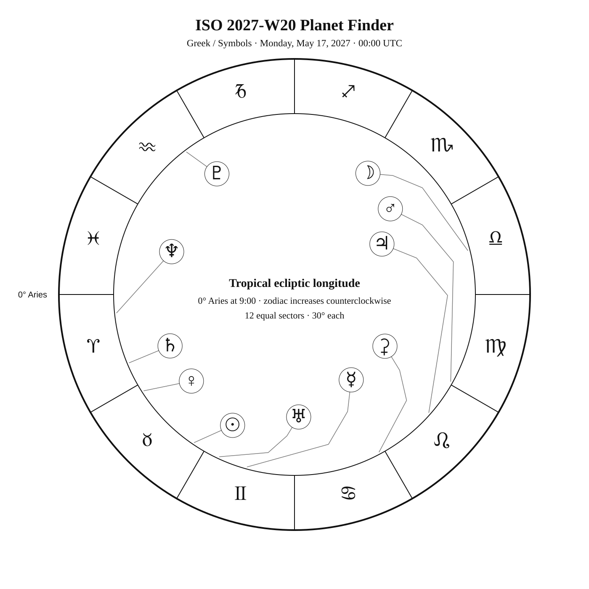
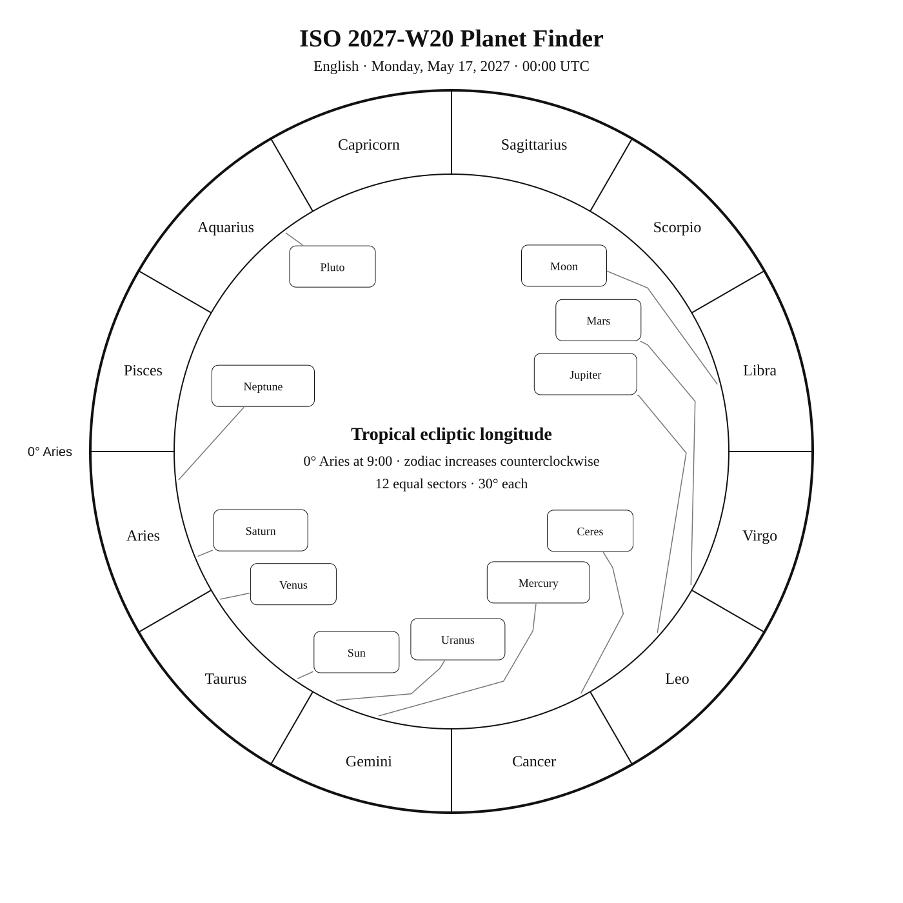
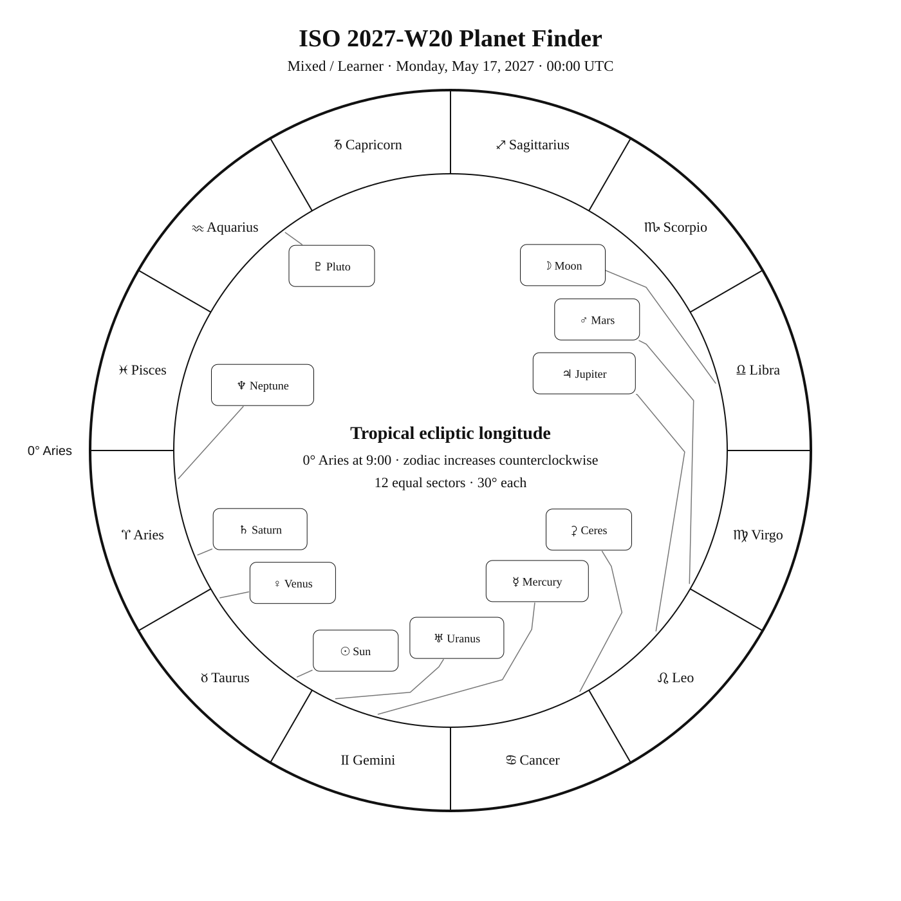

ISO 2027-W20
Week begins: Monday, May 17, 2027
Calendar
| Date | Zodiac day | Events |
|---|---|---|
| Mon, May 17, 2027 | ♉ 28 | Finest NGC 79 / NGC 4517 · often mislabeled NGC 4437 —  11 11.1 — Tropical Spring 11 11.1 — Tropical SpringChara (β CVn) —  4 4.2 — Northern Spring 4 4.2 — Northern SpringFinest NGC 80 / NGC 4526 · MCG 1-32-100 — 11 10.6 — Tropical SpringFinest NGC 81 / NGC 4535 · Lost Galaxy — 11 10.5 — Tropical SpringKraz (β Crv) —  3 2.7 — Tropical Spring 3 2.7 — Tropical SpringM91 — 10 10.2 — Tropical SpringM89 — 10 9.8 — Tropical SpringFinest NGC 71 / NGC 4559 · MCG 5-30-30 / C36 / NGC 4559 — 10 10.3 — Northern Spring |
| Tue, May 18, 2027 | ♉ 29 | C38 / NGC 4565 · Needle Galaxy / Finest NGC 72 / NGC 4565 · Needle Galaxy — 10 9.6 — Northern SpringFinest NGC 82a / NGC 4567 · Siamese Twins — 12 12.1 — Tropical SpringFinest NGC 82b / NGC 4568 · Siamese Twins — 12 11.7 — Tropical SpringM90 — 10 9.5 — Tropical Springα Mus — 3 2.7 — Antarctic SpringM58 — 10 9.7 — Tropical SpringM68 — 8 7.8 — Southern SpringFinest NGC 48 / NGC 4605 · MCG 10-18-74 — 11 10.8 — Northern SpringM104 — 8 8.0 — Tropical Spring |
| Wed, May 19, 2027 | ♉ 30 | γ Cen — 2 2.2 — Southern SpringM59 — 10 9.6 — Tropical SpringC32 / NGC 4631 · Whale Galaxy / Finest NGC 64 / NGC 4631 · Whale Galaxy — 9 9.3 — Northern SpringC98 / NGC 4609 — 7 6.9 — Southern SpringM60 — 9 8.8 — Tropical SpringFinest NGC 65 / NGC 4656 · Hockey Stick or Crowbar — 10 9.7 — Northern Spring |
| Thu, May 20, 2027 | ♉ 31 | 🌕 Full Moon · Blue Moon — 10:59:02 UTC β Mus — 3 3.0 — Antarctic SpringMimosa (β Cru) — Var 1 1.3 1.2–1.3 — Southern Spring |
| Fri, May 21, 2027 | ♊ 1 | ♊ Sun enters Gemini — 06:18:14 UTC C52 / NGC 4697 — 9 9.3 — Tropical SpringFinest NGC 83 / NGC 4699 · MCG -1-33-13 — 10 10.4 — Tropical SpringFinest NGC 73 / NGC 4725 · MCG 4-30-22 — 10 9.9 — Northern SpringM94 — 8 8.2 — Northern Spring |
| Sat, May 22, 2027 | ♊ 2 | Finest NGC 84 / NGC 4762 · MCG 2-33-33 — 11 11.1 — Tropical SpringC99 / Coalsack · Coalsack Nebula — — Southern SpringC94 / NGC 4755 · Jewel Box Cluster — 4 4.2 — Southern SpringAlioth (ε UMa) — Var 2 1.8 1.76–1.78 — Northern Springα1 CVn — 6 5.6 — Northern SpringCor Caroli (α2 CVn) — 3 2.9 — Northern Spring |
| Sun, May 23, 2027 | ♊ 3 | M64 — 9 8.5 — Tropical SpringC105 / NGC 4833 — 7 7.3 — Antarctic SpringC35 / NGC 4889 — 11 11.4 — Northern Spring |
Weekly Solar-System Ephemeris
Snapshot: Week begins May 17, 2027, 00:00 UTC.
(-90° to +90°; defaults +45°, 21:00 LAT)
| Body | ☉︎ | ☽︎ | ☿︎ | ♀︎ | ♂︎ | ♃︎ | ♄︎ |
|---|---|---|---|---|---|---|---|
| Ecliptic | ♉︎ 25°54′ β −0°00′ | ♎︎ 14°15′ β −4°19′ | ♊︎ 14°39′ β +2°15′ | ♉︎ 2°35′ β −1°34′ | ♍︎ 0°54′ β +1°39′ | ♌︎ 18°42′ β +0°58′ | ♈︎ 22°27′ β −2°17′ |
| Observing |  | -11.6 | ☉︎ | -3.9 | 0.6 | -2.0 | 0.7 |
| Rise | 04:33 | 15:47 | 05:24 | 03:42 | 11:44 | 10:40 | 03:23 |
| Set | 19:27 | 02:37 | 21:12 | 17:17 | 01:36 | 01:03 | 16:22 |
Extended targets:
| Body | ⚳︎ | ♅︎ | ♆︎ | ♇︎ |
|---|---|---|---|---|
| Ecliptic | ♋︎ 28°14′ β +8°05′ | ♊︎ 5°10′ β −0°07′ | ♈︎ 5°54′ β −1°22′ | ♒︎ 7°10′ β −4°35′ |
| Observing | 8.7 | ☉︎ | 7.8 | 14.6 |
| Rise | 08:18 | 05:05 | 02:43 | 00:46 |
| Set | 00:50 | 20:13 | 14:57 | 09:32 |
β = ecliptic latitude (+ north, − south).
Rise and set are Local Apparent Time for the selected latitude.
Naked-eye observing uses the Sun’s altitude at the selected Monday observer time: Daylight (Sun ≥ −0.833°), Civil twilight (−0.833° to −6°), Nautical twilight (−6° to −12°), Astronomical twilight (−12° to −18°), and Night (below −18°).
Solar Glare identifies a body too close to the Sun when the sky-state rule does not already supersede its naked-eye classification.
The Sun’s observing status uses this same five-state sky classification.
Planet Finder



Sky Notes
Kilroy: Sky Notes · generated 2026-10-22 11:32:32 UTC
ISO 2027-W20 runs from May 17 through May 23. To find Mars, first identify Leo, trace the Sickle, and locate Regulus in that pattern. Mars lies about 1.1° away in ecliptic longitude at the Monday 00:00 UTC snapshot; use the finder to transfer from Regulus to the planet. Uranus is about 4.6° in ecliptic longitude from Aldebaran in Taurus.


Naked eye: 🌕 Full Moon · Blue Moon — 10:59:02 UTC. Bright moonlight favors prominent stars and planets while reducing contrast on faint deep-sky objects. Use Kraz, α Mus, Gamma Cen, β Mus, Mimosa, Alioth, Cor Caroli as the week’s fixed-sky framework.

Planets: Moon: Naked eye; magnitude -11.6; direct motion; 87.3% illuminated. Monday 00:00 UTC snapshot. Opposition in ecliptic longitude May 20 10:59 UTC. Mercury: In solar glare; magnitude -0.5; direct motion; 65.7% illuminated. Monday 00:00 UTC snapshot. Venus: Naked eye; magnitude -3.9; direct motion; 91.7% illuminated. Below the horizon at 21:00 local apparent solar time, 45°N. Monday 00:00 UTC snapshot. Mars: Naked eye; magnitude 0.6; direct motion; 89.5% illuminated. Monday 00:00 UTC snapshot. Ceres: Telescope; magnitude 8.7; direct motion; 96.8% illuminated. Monday 00:00 UTC snapshot. Jupiter: Naked eye; magnitude -2.0; direct motion; 99.1% illuminated. Monday 00:00 UTC snapshot. Saturn: Naked eye; magnitude 0.7; direct motion; 99.9% illuminated. Below the horizon at 21:00 local apparent solar time, 45°N. Monday 00:00 UTC snapshot. Uranus: In solar glare; magnitude 5.8; direct motion; 100.0% illuminated. Monday 00:00 UTC snapshot. Neptune: Telescope; magnitude 7.8; direct motion; 100.0% illuminated. Below the horizon at 21:00 local apparent solar time, 45°N. Monday 00:00 UTC snapshot. Pluto: Substantial telescope; magnitude 14.6; retrograde motion; 100.0% illuminated. Below the horizon at 21:00 local apparent solar time, 45°N. Monday 00:00 UTC snapshot.


Binoculars: Trace Canes Venatici’s charted figure in the finder, then identify Chara at its charted position. Trace the charted figure of CVn, then identify Alpha1 CVn at its plotted position.
Small telescope: often mislabeled NGC 4437: consult its dedicated finder and observing story for equipment guidance; MCG 1-32-100: consult its dedicated finder and observing story for equipment guidance; Lost Galaxy: consult its dedicated finder and observing story for equipment guidance; M91: consult its dedicated finder and observing story for equipment guidance; M89: consult its dedicated finder and observing story for equipment guidance; MCG 5-30-30: consult its dedicated finder and observing story for equipment guidance; Needle Galaxy: consult its dedicated finder and observing story for equipment guidance; Siamese Twins: consult its dedicated finder and observing story for equipment guidance; Siamese Twins: consult its dedicated finder and observing story for equipment guidance; M90: consult its dedicated finder and observing story for equipment guidance; M58: consult its dedicated finder and observing story for equipment guidance; M68: consult its dedicated finder and observing story for equipment guidance; MCG 10-18-74: consult its dedicated finder and observing story for equipment guidance; Sombrero Galaxy: consult its dedicated finder and observing story for equipment guidance; M59: consult its dedicated finder and observing story for equipment guidance; Whale Galaxy: consult its dedicated finder and observing story for equipment guidance; NGC 4609: consult its dedicated finder and observing story for equipment guidance; M60: consult its dedicated finder and observing story for equipment guidance; Hockey Stick or Crowbar: consult its dedicated finder and observing story for equipment guidance; NGC 4697: consult its dedicated finder and observing story for equipment guidance; MCG -1-33-13: consult its dedicated finder and observing story for equipment guidance; MCG 4-30-22: consult its dedicated finder and observing story for equipment guidance; M94: consult its dedicated finder and observing story for equipment guidance; MCG 2-33-33: consult its dedicated finder and observing story for equipment guidance; Jewel Box Cluster: consult its dedicated finder and observing story for equipment guidance; Black Eye Galaxy: consult its dedicated finder and observing story for equipment guidance; NGC 4833: consult its dedicated finder and observing story for equipment guidance; NGC 4889: consult its dedicated finder and observing story for equipment guidance
Substantial telescope: No fixed-sky Calendar object is classified as requiring a substantial telescope this week.
Other objects listed this week: Siamese Twins
Mercury
Mercury: in solar glare at the Monday 00:00 UTC snapshot. Rises 05:24; sets 21:12 (45°N, local apparent solar time). Visual magnitude -0.5. The disk is 65.7% illuminated (gibbous). It is 18.9° from the Sun, on its east side. Motion is direct at 1.652° per day in ecliptic longitude at the snapshot. Position reference: Elnath, 8.9° away. Mercury: 8.9° from Elnath in the Pathfinder.
Venus
Venus: naked eye at the Monday 00:00 UTC snapshot. At 45°N and 21:00 local apparent solar time, it is 30.7° below the horizon. Rises 03:42; sets 17:17 (45°N, local apparent solar time). Visual magnitude -3.9. The disk is 91.7% illuminated (gibbous). It is 23.4° from the Sun, on its west side. Motion is direct at 1.216° per day in ecliptic longitude at the snapshot. Position reference: Alrescha, 8.0° away. Venus: 8.0° from Alrescha in the Pathfinder.
Moon
Moon: naked eye at the Monday 00:00 UTC snapshot. At 45°N and 21:00 local apparent solar time, it is 35.5° above the horizon. Rises 15:47; sets 02:37 (45°N, local apparent solar time). Visual magnitude -11.6. The disk is 87.3% illuminated (waxing gibbous). It is 138.2° from the Sun, on its east side. Motion is direct at 13.348° per day in ecliptic longitude at the snapshot. Position reference: Spica, 10.2° away. Opposition in ecliptic longitude May 20 10:59 UTC. Moon: 10.2° from Spica in the Pathfinder.
Mars
Mars: naked eye at the Monday 00:00 UTC snapshot. At 45°N and 21:00 local apparent solar time, it is 46.2° above the horizon. Rises 11:44; sets 01:36 (45°N, local apparent solar time). Visual magnitude 0.6. The disk is 89.5% illuminated (gibbous). It is 95.0° from the Sun, on its east side. Motion is direct at 0.383° per day in ecliptic longitude at the snapshot. Position reference: Regulus, 1.4° away. Mars: 1.4° from Regulus in the Pathfinder.
Jupiter
Jupiter: naked eye at the Monday 00:00 UTC snapshot. At 45°N and 21:00 local apparent solar time, it is 41.3° above the horizon. Rises 10:40; sets 01:03 (45°N, local apparent solar time). Visual magnitude -2.0. The disk is 99.1% illuminated (nearly full). It is 82.8° from the Sun, on its east side. Motion is direct at 0.097° per day in ecliptic longitude at the snapshot. Position reference: Acubens, 7.6° away. Jupiter: 7.6° from Acubens in the Pathfinder.
Saturn
Saturn: naked eye at the Monday 00:00 UTC snapshot. At 45°N and 21:00 local apparent solar time, it is 37.2° below the horizon. Rises 03:23; sets 16:22 (45°N, local apparent solar time). Visual magnitude 0.7. The disk is 99.9% illuminated (nearly full). It is 33.5° from the Sun, on its west side. Motion is direct at 0.112° per day in ecliptic longitude at the snapshot. Position reference: Alrescha, 9.9° away. Saturn: 9.9° from Alrescha in the Pathfinder.
Uranus
Uranus: in solar glare at the Monday 00:00 UTC snapshot. Rises 05:05; sets 20:13 (45°N, local apparent solar time). Visual magnitude 5.8. The disk is 100.0% illuminated (nearly full). It is 9.3° from the Sun, on its east side. Motion is direct at 0.058° per day in ecliptic longitude at the snapshot. Position reference: Aldebaran, 7.3° away. Uranus: 7.3° from Aldebaran in the Pathfinder.
Neptune
Neptune: telescope at the Monday 00:00 UTC snapshot. At 45°N and 21:00 local apparent solar time, it is 44.0° below the horizon. Rises 02:43; sets 14:57 (45°N, local apparent solar time). Visual magnitude 7.8. The disk is 100.0% illuminated (nearly full). It is 50.0° from the Sun, on its west side. Motion is direct at 0.027° per day in ecliptic longitude at the snapshot. Position reference: Diphda, 19.6° away. Neptune: 19.6° from Diphda in the Pathfinder.
Ceres
Ceres: telescope at the Monday 00:00 UTC snapshot. At 45°N and 21:00 local apparent solar time, it is 35.9° above the horizon. Rises 08:18; sets 00:50 (45°N, local apparent solar time). Visual magnitude 8.7. The disk is 96.8% illuminated (gibbous). It is 62.6° from the Sun, on its east side. Motion is direct at 0.365° per day in ecliptic longitude at the snapshot. Position reference: Pollux, 4.8° away. Ceres: 4.8° from Pollux in the Pathfinder.
Pluto
Pluto: substantial telescope at the Monday 00:00 UTC snapshot. At 45°N and 21:00 local apparent solar time, it is 38.6° below the horizon. Rises 00:46; sets 09:32 (45°N, local apparent solar time). Visual magnitude 14.6. The disk is 100.0% illuminated (nearly full). It is 108.7° from the Sun, on its west side. Motion is retrograde at 0.004° per day in ecliptic longitude at the snapshot. Position reference: Dabih, 9.6° away. Pluto: 9.6° from Dabih in the Pathfinder.
Highlights
Mercury
In solar glare; magnitude -0.5; direct motion; 65.7% illuminated. Monday 00:00 UTC snapshot. Mercury: 8.9° from Elnath in the Pathfinder.
Venus
Naked eye; magnitude -3.9; direct motion; 91.7% illuminated. Below the horizon at 21:00 local apparent solar time, 45°N. Monday 00:00 UTC snapshot. Venus: 8.0° from Alrescha in the Pathfinder.
Moon
Naked eye; magnitude -11.6; direct motion; 87.3% illuminated. Monday 00:00 UTC snapshot. Opposition in ecliptic longitude May 20 10:59 UTC. Moon: 10.2° from Spica in the Pathfinder.
Mars
Naked eye; magnitude 0.6; direct motion; 89.5% illuminated. Monday 00:00 UTC snapshot. Mars: 1.4° from Regulus in the Pathfinder.
Jupiter
Naked eye; magnitude -2.0; direct motion; 99.1% illuminated. Monday 00:00 UTC snapshot. Jupiter: 7.6° from Acubens in the Pathfinder.
Saturn
Naked eye; magnitude 0.7; direct motion; 99.9% illuminated. Below the horizon at 21:00 local apparent solar time, 45°N. Monday 00:00 UTC snapshot. Saturn: 9.9° from Alrescha in the Pathfinder.
Uranus
In solar glare; magnitude 5.8; direct motion; 100.0% illuminated. Monday 00:00 UTC snapshot. Uranus: 7.3° from Aldebaran in the Pathfinder.
Neptune
Telescope; magnitude 7.8; direct motion; 100.0% illuminated. Below the horizon at 21:00 local apparent solar time, 45°N. Monday 00:00 UTC snapshot. Neptune: 19.6° from Diphda in the Pathfinder.
Ceres
Telescope; magnitude 8.7; direct motion; 96.8% illuminated. Monday 00:00 UTC snapshot. Ceres: 4.8° from Pollux in the Pathfinder.
Pluto
Substantial telescope; magnitude 14.6; retrograde motion; 100.0% illuminated. Below the horizon at 21:00 local apparent solar time, 45°N. Monday 00:00 UTC snapshot. Pluto: 9.6° from Dabih in the Pathfinder.